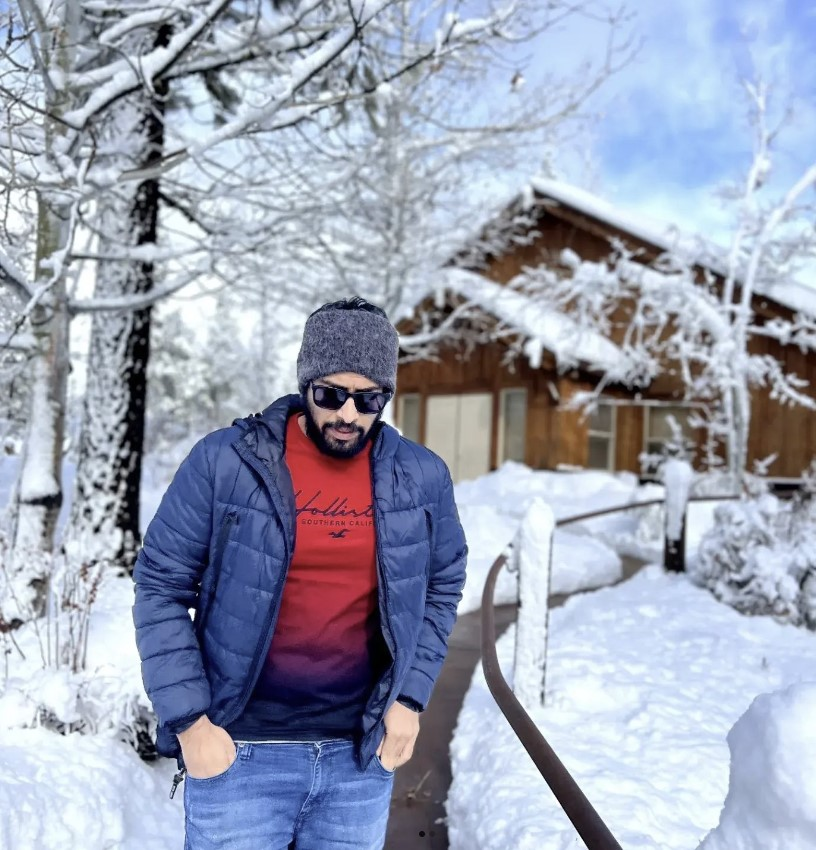

Hemanth Yarlagadda
DevOps Engineer
üëâ yarlaghh@mail.uc.edu
Tech stack
Terraform, Ansible, CloudFormation
Jenkins, CodeBuild, CodeDeploy
Python, Powershell, Bash
Postgres, DynamoDB, MySQL
GitHub, GitLab, Bitbucket, CodeCommit
Work History
üöß Professional Services | Amazon Web Services (AWS)
09/2022 - 04/2023
Worked on 3-tier web architecture that leverages serverless infrastructure.
- Optimized the infrastructure by following the AWS Well-Architected Framework
- Reduced the overall cost of running the infrastructure by 37%
- Developed custom Terraform modules to accommodate customer infrastructure
üöß DevOps Team Lead | Rockwell Automation, AZ
08/2021 - 09/2022
Leading the team to Azure migration from on-premises.
- Responsible for VMWare ESXi maintenance and troubleshooting
- Migrating the on prem build infrastructure to Azure cloud and Vmware Vxrails
- Maintaining and building Jenkins CI/CD pipelines as required for the team
- Improving the Jenkins pipelines by following the best practices thereby reducing build times
- Making use of artifactory to publish builds and managing dependencies required for the build in
artifactory repos
üöß DevOps Engineer | Fruitstone
Jan/2020 - July/2021
Migrating legacy Jenkins configuration to the newer pipeline scripts
.
- Integrated JFrog Artifactory with Jenkins to store builds, binaries, dependencies, and packages necessary
for building the product
- Configuring servers and installing required softwares using Ansible playbooks
üöß Cloud Developer | SiSTel Group
Mar 2015 - Oct 2016
Deploying and managing on-premises cloud along with aws cloud
- Deployed and managed servers utilizing both traditional and cloud-oriented providers like Amazon with
Ansible configuration management through initial technology development, and into production and
maintenance.
- Worked with VMware ESXi on creating new VMs and managing the operating system on the VMs
- Worked with AWS Cloud formation templates for services like S3, DMS etc.